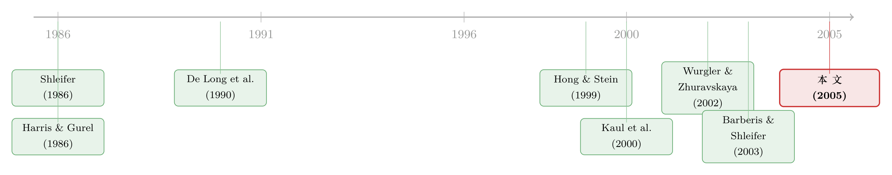

套利者的资产负债表，给每只股票标了一个价
本文读的是 Greenwood (2005, Journal of Financial Economics)：当一群股票同时被指数投资者「无信息」地买进卖出时，每只股票的事件期收益，并不取决于它自己的供需失衡有多大，而取决于它对套利组合总风险的边际贡献——更妙的是，那些根本没被买卖的股票，也会因为充当了套利者的「对冲腿」而跟着涨跌；而初始涨得越凶的，事后跌得越狠。作者用 2000 年 4 月日经 225 指数的一次罕见改版，干净地验证了这三层预测。
1 一个被问了二十年、却总也问不清的问题
股票的需求曲线到底是不是向下倾斜的？
这听上去像是个有点蠢的问题——经济学第一课就告诉我们，需求曲线当然向下倾斜。可在金融学里，它偏偏是个争论了几十年的难题。教科书式的有效市场观点会说：一只股票有千千万万个近乎完美的替代品，只要有人「无缘无故」地把它抛出来，套利者会以几乎不变的价格悉数接走，价格纹丝不动——换句话说，单只股票的需求曲线应该是水平的。
可现实里，人们一次又一次看到：把一只股票加进标普 500，它就涨；从指数里剔除，它就跌。这背后并没有任何关于公司基本面的新消息，纯粹是指数基金被动地调仓。如果需求曲线真是水平的，这种「无信息的需求冲击」凭什么能撼动价格？
这就是这篇论文出发的地方。但作者 Robin Greenwood 想问的，其实比「需求曲线斜不斜」更进一步。
首先，过去的研究几乎都盯着一只股票看——加一只、删一只，看它涨多少。可真实世界里，需求冲击几乎从不单独行动。散户赎回基金，基金经理会按比例卖掉一篮子持仓；指数调整往往是「有进有出」；互换、组合重构、指数套利……需求冲击总是同时砸向一大群证券，而且砸的力度各不相同。那么，当几十、上百只股票同时被推搡时，每一只的价格该怎么动？
接着，一个更微妙的问题浮现了：如果套利者是用一个组合去接盘的，那么决定某只股票该涨多少的，究竟是它自己的供需缺口，还是它在套利者整个篮子里扮演的角色？
然后，还有一个几乎没人认真问过的问题：那些压根没被买卖的股票，会不会也跟着动？
这三个问题，串起了整篇论文。而真正关键的一步在于——作者找到了一个能把它们一次性问清楚的「天赐实验」。
2 识别策略：一次把 255 只股票同时推下水的改版
故事的舞台在东京。
2000 年 4 月 14 日（周五）收盘后，编制日经 225 指数的《日本经济新闻》突然宣布：要大改指数成分。理由冠冕堂皇——「产业与投资环境」变了，旧指数越来越不能代表市场。改版的内容是：用 30 只大市值的高科技股，替换掉 30 只小市值的老成分股；由于新进的股票权重远大于被删的，留下来的 195 只股票，权重被一刀砍掉了约 40%。变更将在一周后、4 月 24 日（周一）开盘时生效。
这意味着什么？所有跟踪日经 225 的机构投资者，必须在这一周里重新配平自己的组合：买入 30 只新增股，卖出 30 只删除股，同时减持 195 只留存股各约四成。整个调仓涉及的交易量约 2 万亿日元（约 190 亿美元）。事件周里，这 255 只股票的换手率达到了过去一年平均水平的 3.17 倍。
为什么说这是「天赐」？因为它几乎满足了识别一个需求曲线模型所需要的一切苛刻条件：
- 样本量大。255 只股票同时受冲击，足够用横截面变异去估计模型，而不是靠一两只股票的孤证。
- 冲击大小可精确测量。日经 225 是一种古怪的「价格加权」指数（而非市值加权），这让不同股票受到的需求冲击大小天然地、可测地各不相同——这正是识别的命根子。
- 同时发生。所有冲击在同一周内砸下，横截面里其他因素被自然地「控制」住了。
- 几乎不含信息。这是一次纯粹由编制规则驱动的被动调仓，不像通常的「指数纳入」那样可能夹带「这家公司变好了」的暗示。
事件周的结果触目惊心：新增股平均涨 19%，删除股平均跌 32%，留存的 195 只平均跌 13%。而同期整个市场几乎纹丝不动——东证综合指数（TOPIX）只跌了 1.18%。要知道，这 255 只受影响的股票，合计占了东京证交所市值的 71%。这么大一块市场被搅得天翻地覆，而「市场」本身却几乎没动——这本身就说明，搅动价格的不是基本面，而是供需。
把日内拆开看更清楚：生效前的那个周一（4 月 17 日），删除股一天就跌了 18.81%，留存股跌 5.08%，新增股基本持平；第二天新增股又反弹 7.26%。这是一场被规则强行制造出来的、肉眼可见的供需拉锯。
但 Greenwood 真正想做的，不是再记录一次「需求冲击推动价格」——那 Shleifer (1986) 们早就做过了。他要做的，是写下一个多证券的套利模型，让它对每只股票的涨跌给出定量的、可证伪的预测，然后用这 255 只股票去检验。
3 模型：套利者的一本风险账
这是一篇有完整理论模型的论文，值得我们把推导一步步走一遍。整个框架借自 Hong and Stein (1999) 与 Barberis and Shleifer (2003)。
设定。 市场上有 \(N\) 只风险证券，供给固定为向量 \(Q\)；另有一种无风险资产，净收益归一化为零。每只证券在某个终止时刻 \(T\) 派发一次清算红利，红利信息按下式逐期流入：
$$ D_{i,t} = D_{i,0} + \sum_{s=1}^{t} \varepsilon_{i,s} \quad \text{for all } i. $$
这里的信息冲击 \(\varepsilon_{i,s}\) 在时刻 \(s\) 公布，跨期独立同分布，服从均值为零、协方差矩阵为 \(\Sigma\) 的正态分布。\(\Sigma\) 就是后文反复出场的「基本面风险协方差矩阵」——它是全篇的灵魂。
市场上有两类人。一类是指数交易者 (index traders)，他们持有一个外生给定的数量 \(u\)，对价格毫不在意（这就是「无信息需求」的来源）。另一类是短视的均值-方差套利者 (myopic mean-variance arbitrageurs)，他们最大化下一期财富的指数效用：
$$ \max_{N_t} \; E_t\!\left[-\exp(-\gamma W_{t+1})\right], \qquad W_{t+1} = W_t + N_t'\,[P_{t+1} - P_t]. $$
在正态假设下，这等价于熟悉的均值-方差权衡，解出套利者的需求：
$$ N_t = \frac{1}{\gamma}\,[\mathrm{Var}_t(P_{t+1})]^{-1}\,(E_t(P_{t+1}) - P_t). $$
直觉很朴素：预期收益越高、风险越低、风险厌恶 \(\gamma\) 越小，套利者愿意持有得越多。
市场出清。 套利者必须接下指数交易者「不要」的那部分，于是总需求等于总供给 \(N_t = Q - u\)。把它代回需求函数并整理，就得到均衡价格：
$$ P_t = E_t(P_{t+1}) - \gamma\,\mathrm{Var}_t(P_{t+1})\,[Q - u]. $$
这一步是整个模型的枢纽：价格等于「预期的下期价格」减去一个风险折价，而这个折价正比于套利者必须扛下的净头寸 \([Q-u]\) 与其风险 \(\gamma\,\mathrm{Var}_t(P_{t+1})\)。需求冲击 \(u\) 一来，净供给变了，风险折价就变了，价格随之而动。
把这条递推关系顺着时间解开（细节在论文附录里），就得到命题 1——事件期的价格变动：
这条方程把全篇的核心思想压缩进了一行。让我们逐项读它。
第一，事件收益正比于 \(\Sigma u\)。 把随机的基本面 \(\varepsilon_{t^*}\) 先放一边，单看由供给冲击带来的（超额）事件收益，它是 \((T-t^*)\gamma\Sigma u\)——基本面协方差矩阵 \(\Sigma\) 与需求冲击向量 \(u\) 的乘积。\(\Sigma u\) 的第 \(i\) 个元素，恰恰是「冲击 \(u_i\) 对套利组合总风险的边际贡献」。这就是论文最反直觉、也最深刻的一句话：一只股票该涨多少，不由它自己的供需缺口决定，而由它对套利者整个篮子风险的边际贡献决定。
举个论文里的例子。设股票 \(i\) 是新增（正需求冲击 \(u_i\)），股票 \(j\) 是删除（负需求冲击 \(-u_j\)），两者基本面相关系数为 \(\rho_{ij}\)。则 \(i\) 的事件收益正比于 \(\sigma_i^2 u_i - \rho_{ij}\sigma_i\sigma_j u_j\)。若 \(\rho_{ij}>0\)，套利者在 \(j\) 上的空头恰好对冲了他在 \(i\) 上多头的特质风险——于是两边所需的补偿收益都被压低了。冲击越多、彼此协方差越高，每只股票的命运就越是被其他股票的冲击所牵连。正的需求冲击，甚至可能对应负的所需收益。
第二，没有冲击时模型就是 CAPM。 方程里的 \(\Sigma Q\) 项可被解读为持有市场组合的平均所需收益，它正比于 beta 向量。当 \(u=0\)，价格变动就只剩 beta——模型干净地坍缩成资本资产定价模型。这是一个很漂亮的「内嵌检验」：需求曲线模型不是要推翻 CAPM，而是把它当作 \(u=0\) 的特例包了进去。
第三，价格会线性回归。 命题 1 的第二部分给出事件后的反转：
$$ E_{t^*}(P_{t^*+k} - P_{t^*}) = k\,\gamma\,\Sigma\,(Q - u). $$
也就是说，事件期被推高的价格，会随着时间 \(t\!\to\!T\) 均匀地往基本面回落。而且事件收益与事后反转的协方差矩阵
$$ \mathrm{cov}(\Delta P_{t^*},\,\Delta P_{t^*,t^*+k}) = -(T-t^*)\,k\,\gamma^2\,\Sigma\,E(uu')\,\Sigma $$
的对角元全为负——初始涨得越猛的股票，事后跌得越狠。横截面上，事后收益与事件收益负相关。这给了实证一个比「单只股票看反转」强大得多的抓手。
未被冲击的股票（命题 2）。 现在轮到最优雅的一层。把证券分成两组：\(M\) 只受冲击的、\(N\) 只不受冲击的（需求冲击为零）。把协方差矩阵分块，其中 \(F\) 是受冲击证券与未受冲击证券之间的 \((M\times N)\) 协方差矩阵，则未受冲击证券的收益为
$$ P_{t^*} - P_{t^*-1} = \varepsilon_{t^*} + \gamma\,F'\big((T-t^*)\,u_1 + Q\big). $$
读懂它只需一句话：一只根本没被买卖的股票，只要它的基本面与那些被买入的股票正相关，它就会涨。为什么？因为套利者做空新增股要承担风险，而这只相关的股票能对冲这份风险——于是它变成了一个更值钱的「对冲腿」，套利者愿意为它接受更低的预期收益，价格被顶了上去。需求不只影响被买卖那只股票的价格，还通过对冲，间接地波及与它相关的所有股票。（关于「理性投资者为何会拒绝换股、需求曲线为何不平」的另一种拆法，可参见《为什么「理性投资者」也会拒绝换股？——把需求弹性拆成两半》。）
落到数据（命题 3）。 最后把单位从「价格变动」换成「收益率」，并把需求冲击表示成以日元计的净买入 \(\Delta X\)，就得到可以直接上回归的三条预测：
$$ r_{it^*} = a + b\,(\Sigma\,\Delta X)_i + \eta_{it^*}, \quad b>0 \quad\text{(受冲击股票的事件收益)} $$ $$ R_{it^*,t^*+k} = a + b\,r_{it^*} + \eta_{ik}, \quad b<0 \quad\text{(事后反转)} $$
对未受冲击股票，把 \(\Sigma\Delta X\) 换成 \(F'\Delta X\)，符号同样得到验证。
4 主要结果：三层预测，三次命中
模型给了三层预测，数据三次都点了头。
第一层，受冲击股票。 用历史收益估出 \(\Sigma\) 后，每只股票的（超额）事件收益确实正比于「需求冲击对套利风险的边际贡献」\((\Sigma\Delta X)_i\)，回归斜率显著为正。也就是说，不是「谁被卖得多谁跌得多」这么简单，而是「谁对套利组合贡献的风险大，谁的价格反应才大」。
第二层，未受冲击股票。 作者额外收集了 1,042 只在事件前后都不在日经 225 里的股票。正如命题 2 所料，它们的收益与「因事件而改变的、它们对套利风险的贡献」\(F'\Delta X\) 正相关——这些局外人，确实因为充当了套利者的对冲工具而跟着动了。这是全篇我最喜欢的一块证据：它检验的是一个纯理论副产品，而数据居然认账。
第三层，反转。 把收益的回归按持有期 \(k\) 拉长来看：事件后第一周，初始收益里就有超过 20% 被反转掉；接下来 20 周里，又至少有 50% 被反转。价格确实在向基本面线性地、缓慢地回归——这同时也量出了在这场事件里做套利策略的长期盈利空间。
为什么以往很多研究「测不到反转」？命题 1 给了答案：当 \(T\) 远大于 \(t^*\) 时，任意两期之间被反转的比例都趋于零，而基本面新息的方差又很大，反转信号很容易被噪声淹没。横截面之所以更有希望，正是因为事件收益与事后收益之间存在那条干净的线性关系。
5 文献脉络：从「需求曲线斜不斜」到「套利者的一本账」
这条线的源头，是 Shleifer (1986) 和 Harris and Gurel (1986) 几乎同时点燃的那场争论——他们用标普 500 的纳入事件指出，无信息的需求冲击确实能推动价格，需求曲线似乎向下倾斜。随后 Goetzmann and Mark (1986)、Dhillon and Johnson (1991)、Lynch and Mendenhall (1997) 一路接力，反复记录这种价格压力，但也吵个不停：到底是「向下的需求曲线」，还是只是暂时的「价格压力」？

接着，一个自然的问题是：为什么需求会撼动价格？答案落在「有限套利 (limits-to-arbitrage)」上。De Long et al. (1990) 的噪声交易者模型给出了第一块拼图——套利者有风险厌恶、又面对未来的不确定，就不敢无限制地下注纠偏。Wurgler and Zhuravskaya (2002) 把这一步精确化：一只股票越缺乏好的替代品（套利风险越大），它的需求曲线就越陡。Kaul et al. (2000) 则用另一次指数权重调整，提供了「需求曲线确实向下」的干净证据。
然后，真正缺的那一环是动态与多证券。Hong and Stein (1999) 和 Barberis and Shleifer (2003) 提供了可以刻画价格随时间演化的框架。Greenwood (2005) 站在这个肩膀上，把「多只股票同时受冲击、套利者用一个组合接盘」写成了一个能给出横截面定量预测的模型——并且第一次把「未受冲击股票的对冲角色」纳了进来。
这条脉络在后来仍在延伸：把「需求决定价格」推向极致的，是「非弹性市场假说」一系的工作，以及对被动投资如何重塑横截面的研究（可参见《搭便车的人越来越多，价格却没有变笨》、《弱替代：因子动物园是从哪里冒出来的？》与《巨头越涨，基金越要卖它：藏在动量里的「再分散」需求》）。而 Greenwood 这篇，正是从「单只股票」迈向「整张需求曲面」的关键一步。
6 评论与延伸（Q&A + 研究方向）
(a) 几个可能的疑问
Q：这跟标普 500 那一堆「指数纳入」研究，到底有什么不一样？
不一样的地方有两层。一是维度：以往研究问「一只股票被纳入会涨多少」，本文问「上百只股票同时被推搡时，每一只各涨跌多少、彼此如何牵连」，给出的是一张需求曲面而非一个点。二是对冲角色：本文第一次预测并验证了「没被买卖的股票也会因充当对冲腿而动」，这是单只股票框架根本看不到的。
Q：用历史收益估出来的 \(\Sigma\)，会不会本身就有问题，把结果带偏？
这是最实在的担忧。\(\Sigma\) 是用事件前的历史收益估的，既有估计误差，又可能不稳定；而模型的全部预测都建立在 \(\Sigma u\) 和 \(F'\Delta X\) 上。好在三层预测（受冲击、未受冲击、反转）方向一致地都被验证，且未受冲击股票的检验是一个独立的、不太容易靠偶然对上的副产品，这在一定程度上缓解了「\(\Sigma\) 估坏了」的顾虑。但严格说，结果对 \(\Sigma\) 的估计方式有多稳健，仍是要打问号的地方。
Q：凭什么相信这次改版「不含信息」？万一新增的高科技股本来就该涨呢？
作者的辩护有几条：改版是编制规则驱动的被动调整，理由是「产业与投资环境」而非个股基本面；更关键的是，本文做的是横截面研究——即便「入选反映了利好」，也很难解释为什么留存股权重被砍 40% 就跌 13%、未受冲击的相关股票会跟着动、以及事后为何系统性反转。这些都是「信息说」难以同时圆上的。
Q：事件期新增股涨 19%、删除股跌 32%，会不会只是流动性不足下的瞬时价格压力，过几天就没了？
如果只是瞬时压力，价格应该完全反转回去；如果是「需求曲线永久向下」，则不反转。数据落在中间：一周内反转超 20%，20 周内再反转至少 50%——既不是零反转，也不是完全反转。本文模型恰好能容纳这种「部分、线性、缓慢」的反转，因为反转速度正比于初始事件收益，而后者又正比于套利风险贡献。
Q：模型假设套利者「短视」（只看下一期），这会不会太强？
会，作者自己也承认。短视假设让推导得以闭式求解，代价是忽略了未来还会有需求冲击这件事——若把未来指数交易者需求的不确定性也算进来，那将成为额外的风险源，价格路径不会这么干净地线性反转。论文引 Slezak (1994) 讨论了短视假设的影响，并把多期单证券的情形指向 De Long et al. (1990)。
Q：71% 的市值都被搅动了，「市场组合」本身还干净吗？用什么当基准？
这正是事件的妙处也是隐忧。好在 TOPIX（市值加权）同期只跌 1.18%，说明被搅动的是日经 225 这个价格加权口径下的相对权重，而非整个市场的总市值方向。但当受影响股票占到七成市值时，「无风险基准」和「市场收益」的测量难免相互污染，这是读结果时要心里有数的。
(b) 几个可能的研究问题与提案
1. 把这套「边际风险贡献」框架搬到公司债的火线甩卖上。
【经济故事】债券基金遭遇巨额赎回时，会按比例卖出一篮子持仓——这正是本文「比例式需求冲击」的翻版。那么某只债券在抛售中跌多少，是否同样取决于它对基金抛售组合风险的边际贡献，而非它自己被卖了多少？与它相关、却没被卖的债券会不会也跟着动？【可行性】中。需要 TRACE 逐笔成交 + 基金持仓（如 eMAXX/Lipper）来构造 \(\Delta X\) 与 \(\Sigma\)，识别靠赎回冲击的外生性；难点在债券协方差矩阵的估计远比股票噪声大、成交稀疏。
2. 外资被动资金的「指数再定义」自然实验。
【经济故事】MSCI/FTSE 对新兴市场的纳入因子调整，会同时推搡一国数百只股票，且冲击大小由可投资权重精确决定——几乎是日经 225 故事的国际版。可借此检验：未被纳入、却与纳入股相关的本地股票，是否也因外资套利者的对冲需求而被波及？【可行性】高。MSCI 调整日期与因子公开可得，个股收益数据成熟，识别干净；是把本文直接外推、且数据现成的方向。
3. 当套利者自己也受约束时，\(\gamma\) 会不会内生地随行情变动？
【经济故事】本文把风险厌恶 \(\gamma\) 当常数。但现实中，做市商和套利者的「风险预算」在危机里会收紧，等价于 \(\gamma\) 飙升。若把 \(\gamma\) 写成中介资本状况的函数，需求冲击在压力时期对价格的冲击应当被放大。【可行性】中。可用中介资本因子（如交易商杠杆）与需求冲击交互项检验，数据可得；难在把「约束收紧」与「基本面恶化」分开。
4. 反转速度能不能反推出套利资本的「半衰期」？
【经济故事】本文预测反转速度正比于初始事件收益、且随 \(T-t^*\) 线性衰减。把多次类似的指数改版/大额调仓汇总，估计每次反转的「半衰期」，或许能量出不同时期、不同市场里套利资本到位的快慢。【可行性】中。需要一批可比的、冲击大小可测的事件；难点是事件稀少、每次 \(T\)（清算视界）难以界定。
7 我的判断
这篇论文的贡献，在于它把一个被吵了二十年的老问题——「股票需求曲线斜不斜」——重新表述成了一个多证券、有结构、可定量的命题，并且找到了一个近乎完美的实验去检验它。它最漂亮的洞见不是「需求能推动价格」（那早有人证），而是「决定单只股票反应的，是它在套利组合里的边际风险贡献」，以及由此推出的、连局外股票都被对冲需求波及的预测。后者作为一个纯理论副产品居然被 1,042 只未受冲击股票的数据认账，是全篇说服力最强的一击。
对识别，我有两点保留。其一，所有定量预测都建立在用历史收益估出的 \(\Sigma\)（及 \(F\)）上，而协方差矩阵的估计既不稳定又有误差，论文对「结果对 \(\Sigma\) 估计方式有多敏感」着墨不多。其二，事件覆盖了七成市值，「市场基准」与「受冲击组合」难免相互污染，超额收益的测量需要更谨慎的对照。
后续我最想看到的，是把这套「边际风险贡献」框架搬到流动性更差、替代品更稀缺的市场——尤其是公司债与新兴市场。需求曲线在那里应当更陡、对冲效应更强，本文的机制理应被放大；而那也正是检验这个模型外部效度的真正考场。
参考文献
- Barberis, N., Shleifer, A. (2003). Style investing. Journal of Financial Economics 68(2), 161–199.
- De Long, J. B., Shleifer, A., Summers, L. H. (1990). Noise trader risk in financial markets. Journal of Political Economy 98(4), 703–738.
- Dhillon, U., Johnson, H. (1991). Changes in the Standard and Poor's 500 list. Journal of Business 64(1), 75–85.
- Goetzmann, W. M., Mark, G. (1986). Does delisting from the S&P 500 affect stock price? Financial Analysts Journal 42(2), 64–69.
- Greenwood, R. (2005). Short- and long-term demand curves for stocks: theory and evidence on the dynamics of arbitrage. Journal of Financial Economics 75(3), 607–649.
- Harris, L., Gurel, E. (1986). Price and volume effects associated with changes in the S&P 500 list: new evidence for the existence of price pressures. Journal of Finance 41(4), 815–829.
- Hong, H., Stein, J. C. (1999). A unified theory of underreaction, momentum trading and overreaction in asset markets. Journal of Finance 54(6), 2143–2184.
- Kaul, A., Mehrotra, V., Morck, R. (2000). Demand curves for stocks do slope down: new evidence from an index weights adjustment. Journal of Finance 55(2), 893–912.
- Lynch, A., Mendenhall, R. (1997). New evidence on stock price effects associated with changes in the S&P 500 index. Journal of Business 70(3), 351–383.
- Shleifer, A. (1986). Do demand curves for stocks slope down? Journal of Finance 41(3), 579–590.
- Slezak, S. L. (1994). A theory of the dynamics of security returns around market closures. Journal of Finance 49(4), 1163–1211.
- Wurgler, J., Zhuravskaya, E. V. (2002). Does arbitrage flatten demand curves for stocks? Journal of Business 75(4), 583–608.